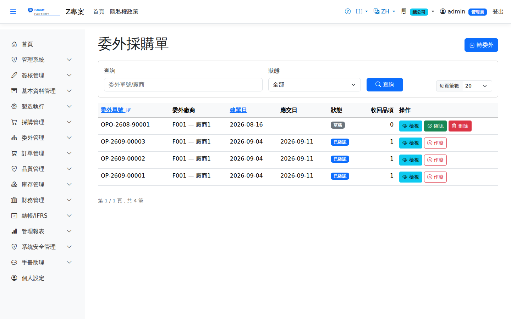

委外採購單Outsource purchase order
針對委外工序向加工廠下單。單價可自「委外報價主檔」帶入，確認後配合「委外發退料單」發出原料，加工完成由 PUR「委外收貨」入庫並自動產生應付發票。Places an order with a subcontractor for an outsourced operation. Prices can be pulled from the outsource quotation master; once confirmed, raw material is sent out with an outsource material document, and finished parts come back through PUR "Outsource Receipt", which creates the AP invoice automatically.

查詢Search
單據狀態Status
| 狀態Status | 說明Guide |
|---|---|
| 草稿 DraftDraft | 由「轉委外」產生，尚未送交廠商；可確認或直接刪除（刪除會回沖委外建議的已轉量）。Created by "Convert to Outsource" and not yet sent to the vendor; it can be confirmed or deleted (deleting reverses the outsource demand's converted quantity). |
| 已確認 ConfirmedConfirmed | 已送交廠商，可開立委外收貨；不能再修改或刪除。Sent to the vendor; outsource receipts can now be created. It can no longer be edited or deleted. |
| 已作廢 VoidVoid | 廠商取消時，已確認的委外採購單可在清單按「作廢」。僅限尚未有任何收貨單（草稿收貨單請先刪除），且送到廠商的料已全數以委外退料退回；作廢後解除與工單的連結、委外建議的已轉量回沖，可重新轉單給其他廠商，來源工單也才能作廢。不可復原。When the vendor cancels, a confirmed outsource purchase order can be voided with "Void" in the list. This is only allowed when there are no receipts yet (delete draft receipts first) and all materials sent to the vendor have been returned with an outsource return slip. Voiding unlinks it from the work order and reverses the converted quantity of the outsource demand, so it can be converted again for another vendor and the source work order can then be voided. It cannot be undone. |
作業流程Process
建立委外採購單Create Outsource PO
列印Printing
清單每列的 按鈕（需有列印權限）在新分頁開啟含 QR Code 的列印單，可直接列印或另存 PDF。列印單含委外廠商名稱、各行工單／工序、品號與品名、數量與單位、幣別、單價與金額，並依幣別分列合計，可直接交給委外廠商。The button on each row of the list (print permission required) opens a printout with a QR code in a new tab, ready to print or save as PDF. The printout shows the subcontractor name, each line's work order and operation, product code and name, quantity and unit, currency, unit price and amount, with a total per currency — ready to hand to the subcontractor.
欄位說明Field reference
明細欄位Line fields
| 欄位Field | 說明Guide |
|---|---|
| 序Seq | 明細行序Line seq |
| 來源工單-工序Source WO-Op | 本委外加工對應的工單與途程工序；工序主檔勾選「委外」者才會產生The work order and routing operation this outsourcing belongs to; only operations flagged as outsourced in the routing master appear |
| 收回品Returned Product | 加工完成後要收回的品號Item to be received back after processing |
| 數量Count | 委外加工的數量Quantity sent for outsourced processing |
| 送外料Send Materials | 需一併送到廠商端的用料清單；實際耗用超過標準用量的部分計為超耗扣款The material list that must go out with the shipment; consumption beyond the standard usage becomes a scrap penalty |
單價與交期天數取自委外報價主檔中該廠商／品號／工序在有效期間內的報價。The price and lead days come from the quotation for that subcontractor, product and operation that is valid on the document date.
相關畫面Related screens
委外報價主檔Outsource Quotation、委外進度追蹤Outsource Progress、委外收貨Outsource receipt